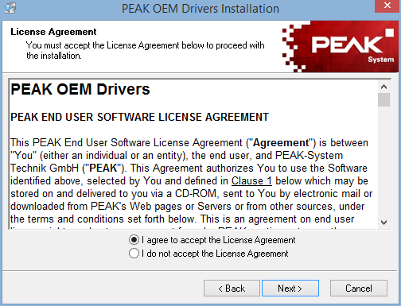

In order to use the PEAK PCAN-USB adapter you need to install its driver.
Download the driver package on the Peak web site: http://www.peak-system.com/fileadmin/media/files/usb.zip
You should get a zip file (usb.zip) containing the driver installation wizard. Unzip this file and run lunch the file 'PeakOemDrv.exe'.

Select installation language and click 'OK'.

Click 'Next' to start the installation process.

Read the license agreement and click 'I agree to accept the License Agreement' and then click 'Next'.

Check the installation folder and click 'Next'. Installation folder may be modified using the 'Browse' button.

Since CANStream is only using PCAN-USB adapter the only driver requested is therefore 'PCAN-USB, PCAN-USB Hub'. Check this box and click 'Next'.

Click 'Next' to launch the actual driver installation.

Once all files copied, click 'Finish' to quit the installation wizard.
Created with the Personal Edition of HelpNDoc: Generate EPub eBooks with ease